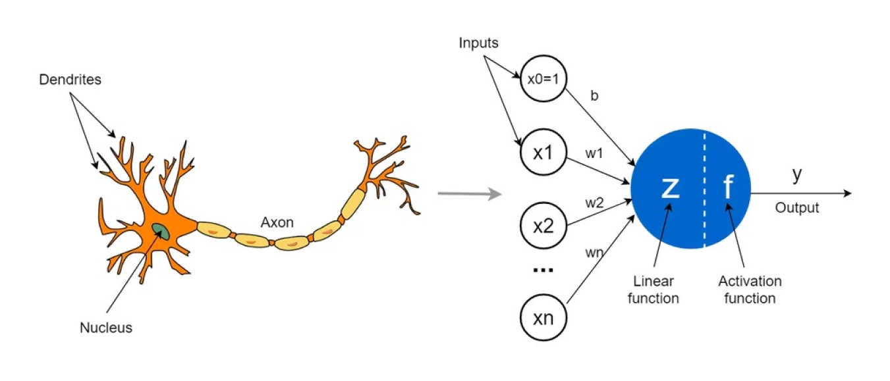
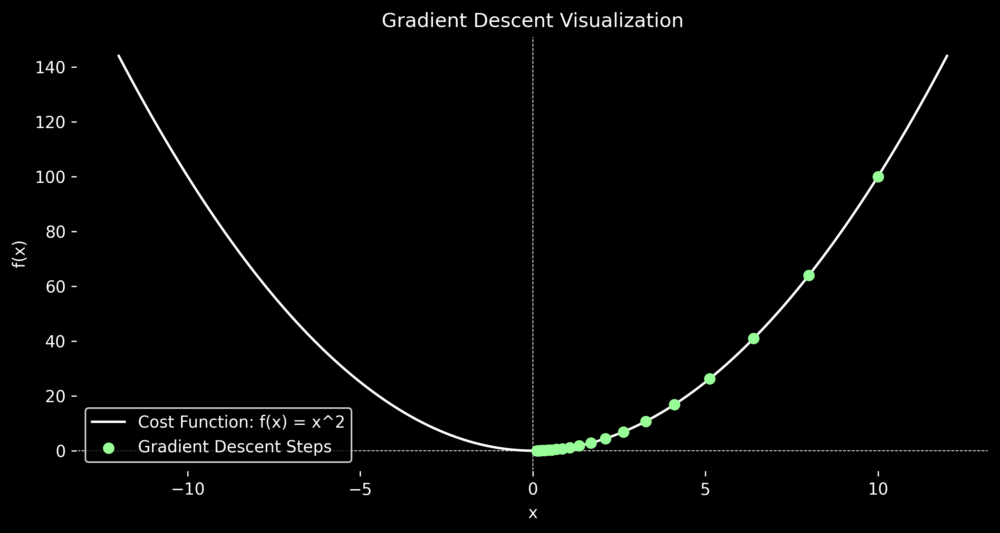

Some nights, I’m wide awake, wondering if my neural network is secretly judging me. Why does it take 500 epochs to converge? Is it dreaming of electric sheep while I’m debugging at 2 a.m., chugging coffee, and questioning my life choices?
anyways,
Let me take you back to the moment my brain did a full 180. It was the first time I read about perceptrons and gradient descent. I remember thinking, “Wait, this is it? This is how machines learn?” It felt like someone had handed me the keys to a secret universe.
At its core, a perceptron is just a simple mathematical function. It takes inputs, weighs them, sums them up, and spits out an output. But when you stack a bunch of them together, something magical happens. They start to mimic the way our brains work kind of. It’s like building a digital brain, one tiny neuron at a time.
|

(source: ultralytics/AbiramiVina) |

Gradient descent in action: minimizing the cost function step by step. |
But the real mind blown was gradient descent. Imagine you’re standing on a mountain, blindfolded, and your goal is to find the lowest point. You can’t see anything, so you take small steps, feeling the slope beneath your feet. If the ground slopes downward, you keep going. If it slopes upward, you backtrack. That’s gradient descent in a nutshell. It’s the algorithm that helps models “learn” by minimizing errors, one step at a time.
When I first understood this, it blew my mind. I realized that machine learning isn’t about writing rules for machines to follow. It’s about creating systems that can figure out the rules on their own. It’s like teaching a kid to ride a bike you don’t tell them exactly how to balance; you let them figure it out through trial and error. Gradient descent is the machine’s way of wobbling, falling, and eventually finding its balance.
This changed how I thought about problems. Instead of trying to solve everything with rigid logic, I started thinking in terms of optimization. How can I frame this problem so that a model can learn from it? What’s the loss function here? What’s the gradient?
And then it hit me: this isn’t just about machines. It’s about us too. We’re all out here, stumbling through life, trying to minimize our own “loss functions.” Whether it’s finding the right career, the perfect relationship, or just the best way to spend a Saturday afternoon, we’re all doing our own version of gradient descent. Maybe that’s why I find this stuff so fascinating it’s not just math; it’s a metaphor for life.
Okay, let’s talk about my obsessions. Because, let’s face it, if you’re into machine learning, you’re probably a little obsessed too. Admit it.
Learning: I’m currently into reinforcement learning. You know, teaching machines how to make decisions. It’s fascinating, but also ironic because I can’t even decide what to eat for dinner. Should I order biryani or try that new japanese place? The struggle is real. Meanwhile, the RL models is out here learning to play chess like a grandmaster. Priorities, right?
Experimenting: Why not to build a chatbot. But not just any chatbot instead one that argues back. Why? Because debates make us smarter. Or at least that’s what I tell myself when it starts roasting my coding skills. It’s like having a mini Elon Musk in my terminal, except it doesn’t charge me $22 a month (yet).
Creating: Lately, I’ve been obsessed with ancient Indian Vedas and manuscripts. Yeah, random, I know. But hear me out. These texts are like the OG data sets thousands of years of wisdom, philosophy, and life hacks. why not use AI to analyze them, looking for hidden patterns and connections. Who knows? Maybe the secret to the universe is buried in there, waiting for a neural network to uncover it. Or maybe it’s just a bunch of really old recipes. Either way, I’m here for it.
At the end of the day, machine learning isn’t just about algorithms and data. It’s about curiosity. It’s about asking questions that don’t have easy answers. It’s about pushing boundaries and seeing what’s possible.
Sure, sometimes it feels like we’re just teaching machines to do cool tricks. But other times, it feels like we’re uncovering something bigger something about how the world works, how we think, and maybe even what it means to be human.
So yeah, that’s what keeps me up at night. Not just the code or the models, but the endless possibilities. The what-ifs. The dreams of electric sheep. And honestly? I wouldn’t have it any other way.
TL;DR: Machine learning is equal parts frustrating and fascinating. It’s about debugging at 2 a.m., arguing with chatbots, and wondering if AI will ever be creative. But mostly, it’s about curiosity, experimentation, and the thrill of discovering something new. Also, neural networks might be judging us. Just saying.
BTW, I’m Saurabh, my friends call me soro.